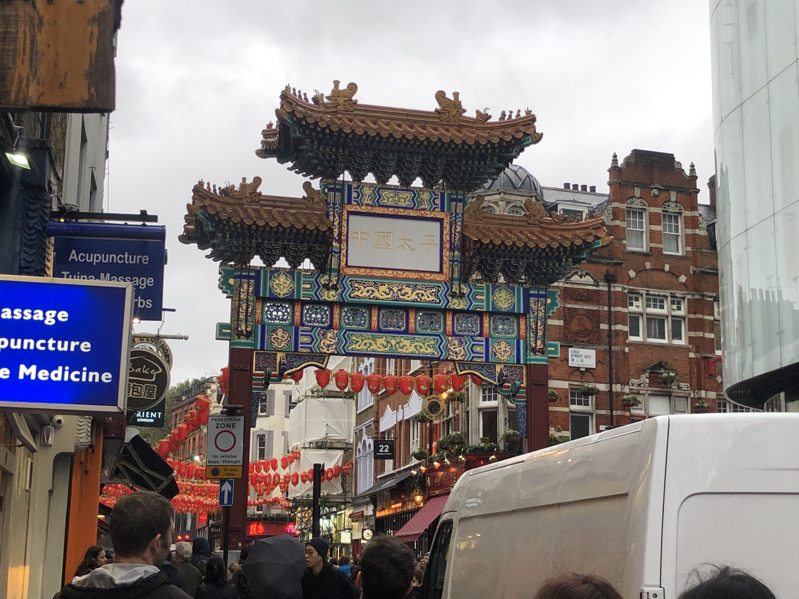
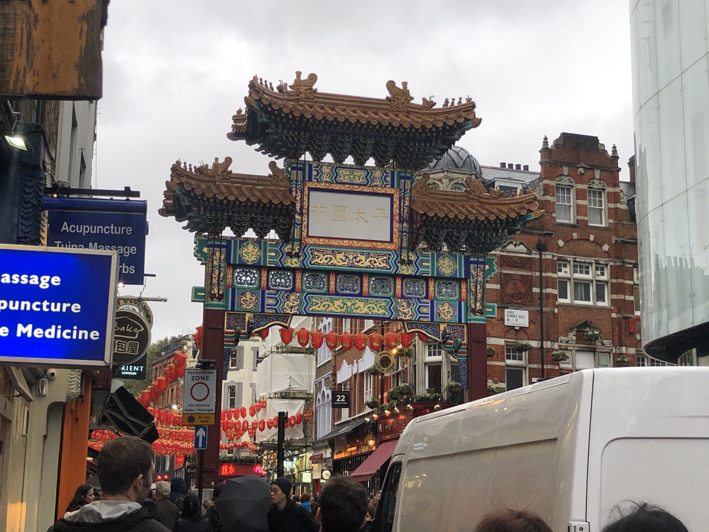

Why London?
Why London is the world’s best city
London has something for everyone: from history and culture to fine food and exceedingly good times. 2000 years of history has made the ‘Big Smoke’ deeply cosmopolitan and exotic. With such diversity, London’s cultural dynamism makes it among the world’s most international cities.
CAFÉS
My favourites cafés in London

Gee gee café
At Gee Gee’s Cafe, we are known as a local coffee shop with delicious meals and specialties. Our coffee is fresh roasted and each dish is crafted with care.
Address:
London, United Kingdom N12 7BS
What I like about it
They make the best Crispy Cauliflower Steak in London.

Coppa Club
Around the corner from the Tower of London and across the water from The Shard, Coppa by the Tower has the perfect view of the Southbank’s skyline.
Address:
Lower Thames St. London, EC3R 6AH
What I like about it
One of the best views of the Tower Bridge.

Café de Nata
Café de Nata mades Pastéis de Nata, the world renowned Portuguese custard tart, accompanied by great tasting freshly ground coffee.Our products are prepared and baked in full view of our customers.
Address:
Camden Town, NW1 8AB
What I like about it
They make vegan custard tarts. .
Gallery
My photos from London
 
